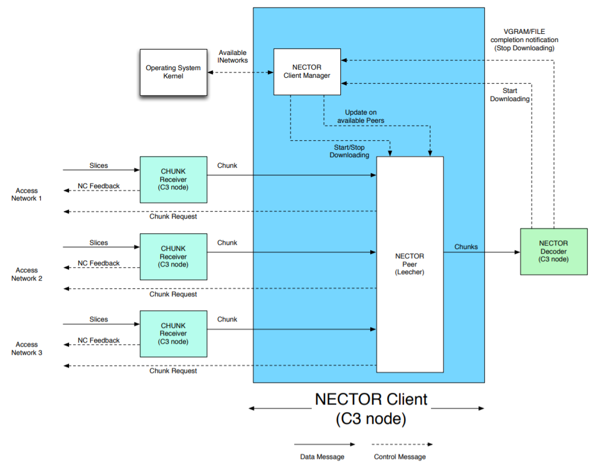
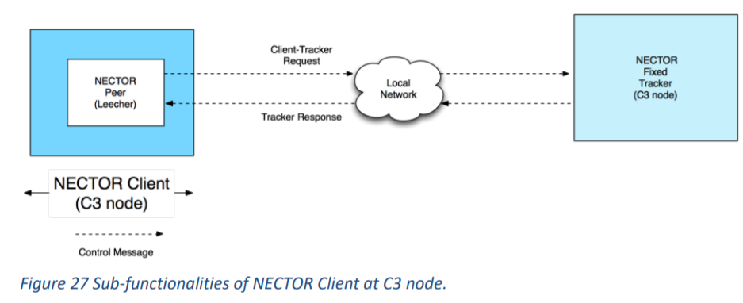

– it is responsible for requesting more chunks from the relevant seeder.
It also communicates with the NECTOR Fixed Tracker for being aware of the seeder
status. It sends the received chunk to the NECTOR decoder.


NECTOR C3 Client sub-functionalities
Decoder building blocks:
1 - NECTOR Client Manager
2 - NECTOR Peer
NECTOR Client Manager functionalities
1 - Operating System Kernel sends the notification to NECTOR Client Manager whenever
a new network is available. For the C3 node, there is only one fixed network, hence
there is only initial one-time signaling between the Client Manager and the Operating
System Kernel.
2 - The NECTOR Decoder sends the notification to the NECTOR Client Manager whenever
a new NECTOR File is available. The NECTOR Client Manager then activates the Peer
to start downloading the chunks via “Start Downloading” message.
3 - The NECTOR Decoder sends the notification to the NECTOR Client manager when all
the chunks are received. The Client Manager then notifies the Peer to stop
downloading the chunks via “Stop Downloading” message.
NECTOR Peer
Each peer is identified by: ip address, UDP port number, TCP port number (at C3 same IP but different port)
The NECTOR peer (leecher) has:
Each Peer sends the Client-Tracker Request to NECTOR Fixed Tracker and The NECTOR
Tracker sends Tracker Response (See above).
It requests chunks from the list of available Peers. The chunk request message
contains the following keys: number of chunks requested in one chunk request, UDP port number to receive the chunks, IP address to receive the chunks